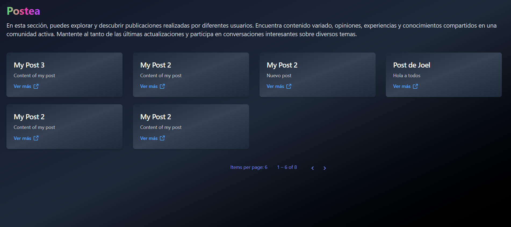

<div class="leading-normal h-screen tracking-normal text-indigo-400 p-6 bg-cover bg-fixed"
  style="background-image: url('../../../assets/images/header.png');">
  <div class="h-full">
    <!--Nav-->
    <div class="w-full container mx-auto">
      <div class="w-full flex items-center justify-between">
        <a class="flex items-center text-indigo-400 no-underline hover:no-underline font-bold text-2xl lg:text-4xl"
          href="/public/landing">
          <span
            class="bg-clip-text text-transparent bg-gradient-to-r from-green-400 via-pink-500 to-purple-500">Postea</span>
        </a>

        <div class="flex w-1/2 justify-end content-center space-x-4">
          <button
            (click)="login()"
            class="bg-gradient-to-r from-purple-800 to-green-500 hover:from-pink-500 hover:to-green-500 text-white font-bold py-2 px-4 rounded focus:ring transform transition hover:scale-105 duration-300 ease-in-out cursor-pointer">
            Iniciar Sesión
          </button>
          <button
            (click)="register()"
            class="bg-gradient-to-r from-blue-500 via-purple-600 to-indigo-500 hover:from-teal-400 hover:via-blue-500 hover:to-purple-600 text-white font-bold py-2 px-4 rounded focus:ring transform transition hover:scale-105 duration-300 ease-in-out cursor-pointer">
            Registrarte
          </button>

        </div>

      </div>
    </div>

    <!--Main-->
    <div class="container pt-24 md:pt-36 mx-auto flex flex-wrap flex-col md:flex-row items-center">
      <!--Left Col-->
      <div class="flex flex-col w-full xl:w-2/5 justify-center lg:items-start overflow-y-hidden">
        <h1 class="my-4 text-3xl md:text-5xl text-white opacity-75 font-bold leading-tight text-center md:text-left">
          Crear tus
          <span class="bg-clip-text text-transparent bg-gradient-to-r from-green-400 via-pink-500 to-purple-500">
            Posts
          </span>
          y administra tus
          <span class="bg-clip-text text-transparent bg-gradient-to-r from-green-400 via-pink-500 to-purple-500">
            usuarios
          </span>
        </h1>

        <div class="w-full flex justify-start pl-6 h-24">
          <div (click)="verPosts()" class="relative inline-flex group h-14">
            <div
              class="absolute transitiona-all duration-1000 opacity-70 -inset-px bg-gradient-to-r from-[#44BCFF] via-[#FF44EC] to-[#FF675E] rounded-xl blur-lg group-hover:opacity-100 group-hover:-inset-1 group-hover:duration-200 animate-tilt">
            </div>
            <button
              class="relative inline-flex items-center justify-center px-8 py-4 text-lg font-bold text-white transition-all duration-200 bg-gray-900 font-pj rounded-xl focus:outline-none focus:ring-2 focus:ring-offset-2 focus:ring-gray-900 cursor-pointer">
              Ver posts públicos
          </button>
          </div>
        </div>

      </div>

      <!--Right Col-->
      <div class="w-full xl:w-3/5 p-12 overflow-hidden">
        
      </div>

      <!--Footer-->
      <div class="w-full pt-16 pb-6 text-sm text-center md:text-left fade-in cursor-pointer">
        <a href="https://www.linkedin.com/in/acostajoel0001/" class="text-gray-400 font-semibold no-underline hover:no-underline" target="_blank">2025 - Developed by Joel Acosta</a>
      </div>
    </div>
  </div>
</div>
